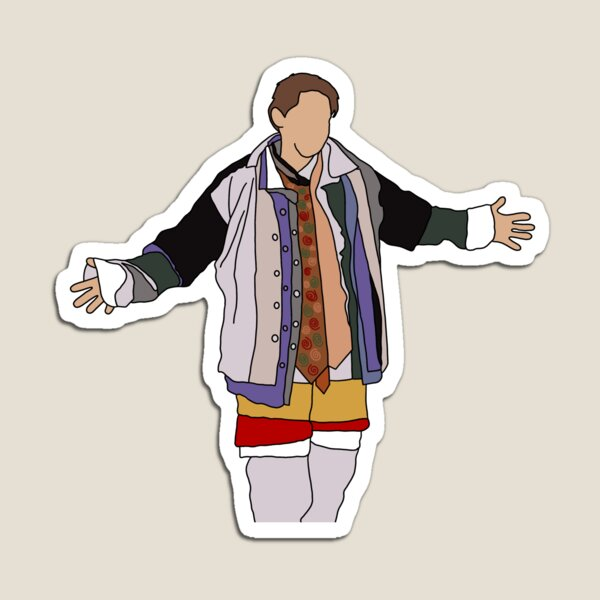
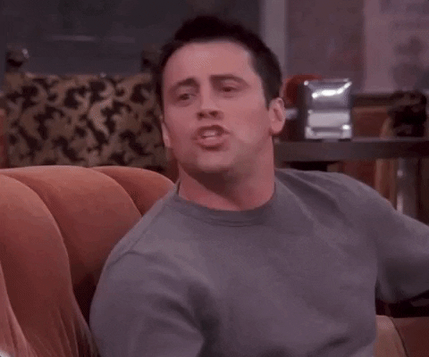
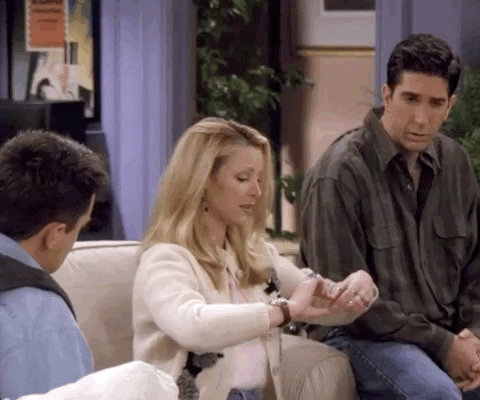

Home
Home
 Explore
Explore
 Notifications
Notifications
 Messages
Messages
 Profile
Profile
 More
More
Home
What's happening?
18 years ago
I got off the plane. ✈
#Watch FRIENDS now!

18 years ago
Pivot! Pivot! Pivot! 😂

18 years ago
SHUT UP! SHUT UP! SHUT UPPPP!!

18 years ago
Joey doesn't share food!

18 years ago
Seven! #777!

18 years ago
See? He's her lobster. 🦞
